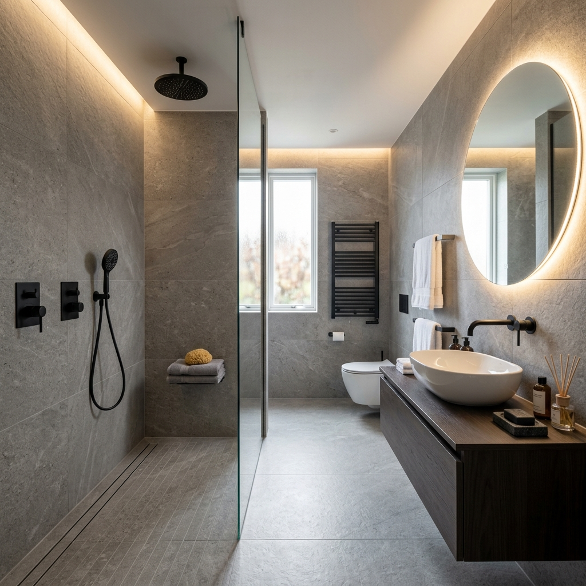

豈樂工程行提供台南浴室全面翻修，從拆除、管線更新到磁磚與衛浴設備，將防水施作一併納入整體改造規劃。
規劃台南浴室改造時，先依現有格局、管線與使用需求評估衛浴整修範圍，再安排 拆除、管線更新、防水層重建與磁磚鋪設。防水是完整翻修中的施工環節，不另提供單獨抓漏服務；浴室翻修費用依現場狀況、設備選擇與施工內容說明。

配合浴室全面翻修，評估管線更新與防水層重建，再銜接磁磚與設備安裝。
TOTO、HCG 等各大品牌馬桶、臉盆、浴缸及暖風機安裝。
從泥作整平到磁磚拼貼，工法細膩，縫隙精準美觀。
專業工程團隊，為您打造舒壓的沐浴時光。